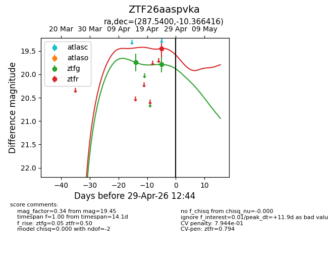
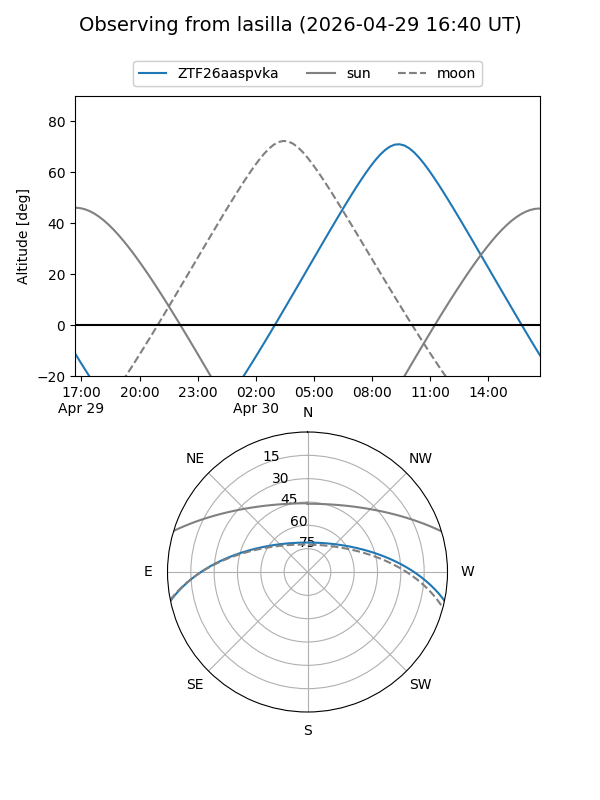
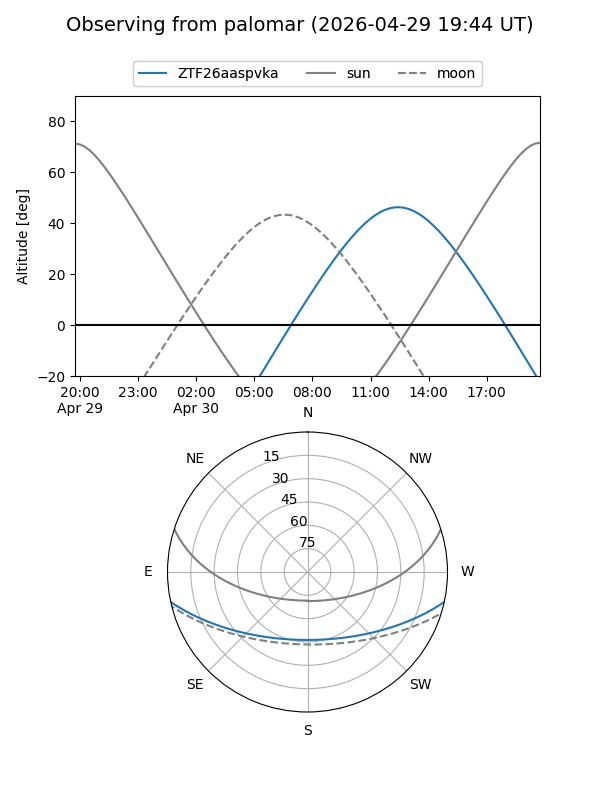
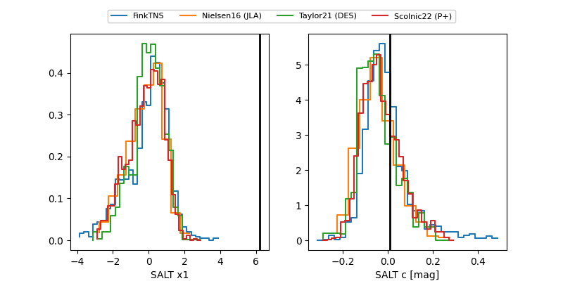

ZTF26aaspvka
Target ZTF26aaspvka at 2026-04-29 12:48
Aliases and brokers:
FINK: link
Lasair: link
ALeRCE: link
alt names
ZTF26aaspvka (ztf,fink_ztf)
Coordinates:
equatorial (ra, dec) = 287.5400,-10.36642
equatorial (HMS+DMS) = 19:10:09.60,-10:21:59.10
galactic (l, b) = (25.7496,-8.82914)
Flags:
likely cv
Photometry:
last ztfg=19.79, ztfr=19.45
2 ztfg, 1 ztfr detections
Lightcurve

Visibility


Additional plots
